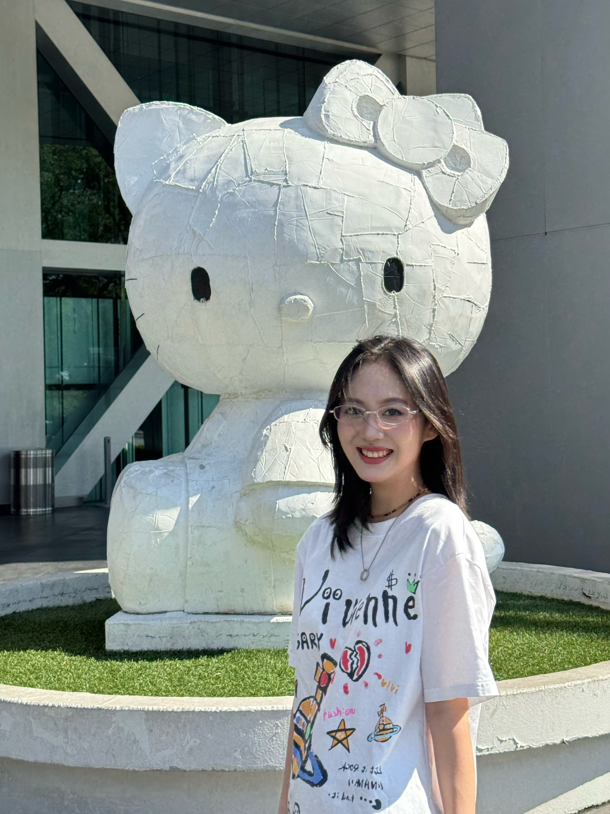

a designer focused on interaction design and front-end development. My background is in visual communication design and digital media, with practical experience in UI/UX design.
I'm passionate about combining design with technology. I enjoy offering an artistic design perspective within teams and am effective at communicating simply and clearly with colleagues from diverse backgrounds to ensure efficient collaboration.
Aside from my design work, I enjoy learning new technologies, especially in web development and interactive design. I believe creativity should be an essential part of all aspects of life, and I strive to bring this philosophy into everything I do.
